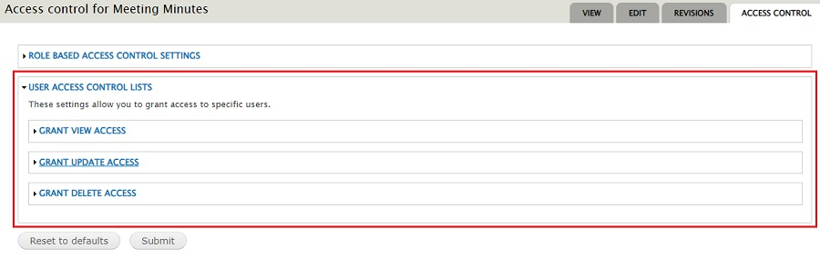
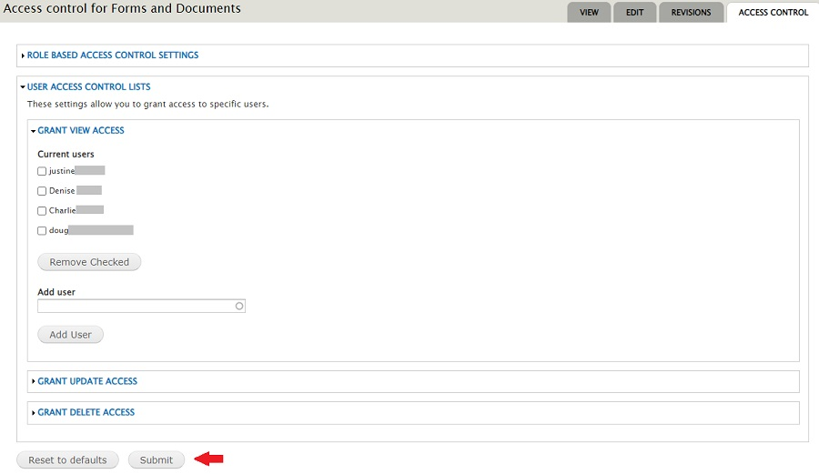

Not every Primary or Discretionary Officer needs, or wants, a HOGScan role that allows them to edit pages or allows them to make changes to the website that could potentially damage the webite. Or, you may have a member that does not have a HOGScan role but needs to be able to view and/or update a page that is only viewed by someone with a role or, can only be updated by someone with a role. For instance;
- Primary Officers that do not have a HOGScan role assigned may have a need to see and/or update the Chapter Officers Forms & Documents page. View and/or Update access can be granted on an individual basis without assigning a role.
- The Head Road Captain (HRC) needs to update a Road Captains Forms, Documents & Procedures page that is only viewable by Road Captains. Update access can be granted on an individual basis without assigning a role.
- The chapter scribe needs to update a Meeting Minutes page or the Treasurer needs to update a Financial Reports page. Update access can be granted on an individual basis without assigning a role.
- This tutorial is divided into two sections. The HRC, Scribe and Treasurer can already see the pages they need to update. For them, you only need follow the steps in the Grant Update Access section. For the Primary Officers that do not have a HOGScan role you will need to follow the steps in both sections, Grant Update Access and Grant View Access. Click the respective link to jump to a specific section.
Grant Update Access
To grant access, you need to use the members Username. By default, the Username field is set to the members HOG ID. It is a best practice to have the member edit their profile and change this field putting in their name as you will not remember what HOG ID matches which member in six months.
Members can use the Username to log in. It can be firstname, firstnamelastname, firstinitiallastname, etc. The system already knows and remembers the members email address so Username should not be the members email address.
For this section in the tutorial, our recording secretary needs to add the meeting minutes to the Meeting Minutes page. This basic page was created by and for Raleigh HOG. When created it was set so that only authenticated (logged in) users can see the page. By default, the minimum role needed to update the page is the Editor role. As this is the only page the recording sec'y needs to update, assigning the Editor role would be overkill. All that is required is update access.
- Referencing the image below, after logging into your website and navigating to the page for which you want to grant Update access, click the Access control tab.
- Referencing the image below, the ROLE BASED ACCESS CONTROL SETTINGS section shows that any authenticated (logged in) user can view this page. (We want the page viewed only by chapter members.)
- Reference the image below showing the USER ACCESS CONTROL LISTS section.
(I closed the 'Role Based Access Control Settings' section to make it easier to see the 'User Access Control Lists' section in the screenshot.) 
- Referencing the image below, there are three Grant Access lists to expand. For this section of the tutorial, expand the Grant Update Access section by single clicking anywhere on the words.
- Referencing the image below, in the Add user box enter the members username.
As you type in the member's username a dropdown of matching names will appear. Select the appropriate one and it will appear in the box.
- Referencing the image below, click the Add User button and the members username will show in Current users.
If needed, additional usernames may be added by repeating steps 3.1 and 3.2.
- Referencing the image below, click the Submit button when all usernames have been added.
- Referencing the image below, you will see a message that changes have been saved.
- I have not had to click the "rebuild permissions" link. Your mileage may vary. If you do click the link you will see the following screen. Either click the Rebuild permissions button and wait until it finishes or click "Cancel" to leave the page.

- Be sure to share the appropriate tutorial with the member so they can do updates properly. Let them know about the sandbox environment so they can try out the steps in the tutorial and see if they have any questions.
Grant View Access
To grant access, you need to use the members Username. By default, the Username field is set to the members HOG ID. It is a best practice to have the member edit their profile and change this field putting in their name as you will not remember what HOG ID matches which member in six months.
Members can use the Username to log in. It can be firstname, firstnamelastname, firstinitiallastname, etc. The system already knows and remembers the members email address so Username should not be the members email address.
For this section of the tutorial, the primary officers do not have the Primary Officer role, therefore they cannot see the Chapter Officers Forms and Documents page. Steps in this section will allow them to see the page. You will need to follow the steps in the preceeding Grant Update Access section if they also need to add to this page.
- Referencing the image below, after logging into your website and navigating to the page for which you want to grant View access, click the Access control tab.
- Referencing the image below, the ROLE BASED ACCESS CONTROL SETTINGS section shows that only Primary Officers can view this page. (By default, Webmaster and Administrator can also see the page.)
- Reference the image below showing the USER ACCESS CONTROL LISTS section.
(I closed the 'Role Based Access Control Settings' section to make it easier to see the 'User Access Control Lists' section in the screenshot.)
- Referencing the image below, there are three Grant Access lists to expand. For this section of the tutorial, expand the Grant Update Access section by single clicking anywhere on the words.
- Referencing the image below, in the Add user box enter the members username.
As you type in the member's username a dropdown of matching names will appear. Select the appropriate one and it will appear in the box.
- Referencing the image below, click the Add User button and the members username will show in Current users.
If needed, additional usernames may be added by repeating steps 3.1 and 3.2.
- Referencing the image below, click the Submit button when all usernames have been added. 
- Referencing the image below, you will see a message that changes have been saved.
- I have not had to click the "rebuild permissions" link. Your mileage may vary. If you do click the link you will see the following screen. Either click the Rebuild permissions button and wait until it finishes or click "Cancel" to leave the page.